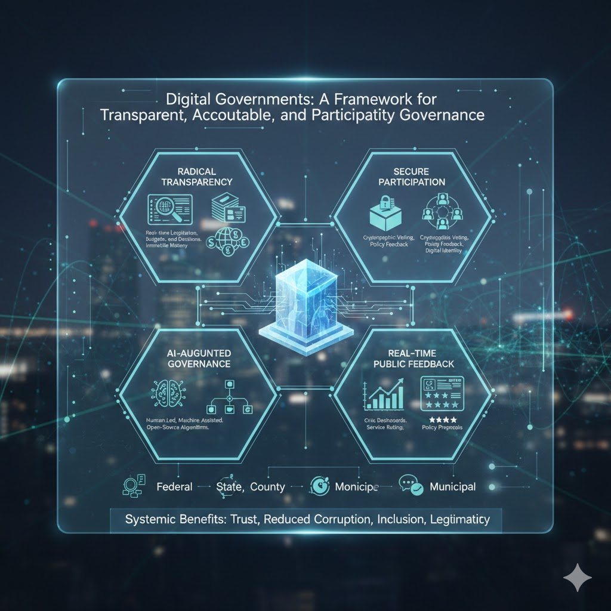

Digital Governments: A Framework for Transparent, Accountable, and Participatory Governance

1. Introduction: Governance Beyond the Analog Era
Modern governments still operate on systems designed for the 18th and 19th centuries—paper-based processes, opaque decision-making, delayed accountability, and limited citizen participation. These outdated structures are increasingly incompatible with a digitally connected society that expects real-time access, verification, and responsiveness.
A digital government is not merely government services moved online. It is a structural reimagining of governance itself—one that leverages cryptography, distributed systems, artificial intelligence, and open data to create institutions that are transparent by default, accountable by design, and participatory at scale.
Importantly, this framework is applied uniformly across all levels of government—federal, state, county, and municipal. Standardized systems, protocols, and data structures ensure that whether a citizen interacts with a city council, a county office, or a national agency, the platform experience, standards, and safeguards are consistent, interoperable, and auditable.
2. Foundational Pillars of Digital Government
A. Radical Transparency
Transparency must be systemic, not discretionary.
Every legislative bill, amendment, vote, budget allocation, and regulatory decision is published in real time on a public platform.
All government spending—down to individual transactions—is visible, searchable, and independently auditable.
Official communications related to public business are preserved as public records by default.
Decision histories are immutable, time-stamped, and traceable, preventing retroactive manipulation or revisionism.
By embedding transparency into the architecture, citizens gain unprecedented oversight across all levels of government.
B. Secure Civic Participation
Democracy must evolve to match the capabilities of modern technology.
Citizens participate in local, regional, and national votes via cryptographically secure, verifiable digital ballots.
Distributed ledger technologies guarantee vote integrity, public verification, and resistance to tampering.
Strong identity verification protects against fraud while preserving voter anonymity.
Participation extends beyond elections to include referenda, policy feedback, and civic proposals.
This ensures persistent democratic engagement at every level of governance, from municipal councils to federal agencies.
C. AI-Augmented Governance (Human-Led, Machine-Assisted)
Artificial intelligence is a tool—not a decision-maker.
Open-source AI assists in drafting legislation, identifying redundancies, and modeling economic, environmental, and social impacts.
AI summarizes and aggregates citizen input, giving leaders clear insight into public sentiment at scale.
Algorithms are fully transparent, auditable, and free from proprietary control.
Final authority always rests with elected or appointed human officials, maintaining accountability and ethical responsibility.
AI enhances decision-making without replacing democratic judgment across all levels of government.
D. Real-Time Public Feedback and Oversight
Governance becomes a continuous dialogue.
A civic dashboard displays:
Tax revenue allocation and spending
Project timelines and performance metrics
Policy outcomes and measurable results
Citizens can:
Comment on legislation and budgets
Rate public services
Submit policy proposals
Track official responses
Government actions shift from closed processes to observable, interactive systems across federal, state, county, and municipal administrations.
3. Systemic Benefits
A fully implemented digital government delivers structural advantages:
Restored public trust through verifiable openness
Dramatically reduced corruption, as secrecy becomes difficult to maintain
Lower administrative costs and faster service delivery
Greater inclusion, particularly for marginalized and geographically isolated populations
Stronger democratic legitimacy through continuous participation
Evidence-based policymaking, replacing ideology-driven governance
By standardizing practices under a common framework, citizens experience consistent access, participation, and accountability at every level of government.
4. Implementation Blueprint
Phase 1: Digital Infrastructure
Secure national and local digital identity frameworks with strong encryption and privacy safeguards
Federated databases at federal, state, county, and municipal levels to prevent centralized failure
Open technical standards to eliminate vendor lock-in and ensure interoperability across all levels
Phase 2: Legislative and Budget Transparency Platform
Unified public portals for:
Bills, amendments, and voting records
Budgets, expenditures, and audits
Regulatory actions and justifications
Built-in public annotation and commentary tools across all government layers
Phase 3: Citizen Engagement Platform
Secure mobile and desktop applications for:
Voting and referenda
Civic discussion and feedback
Public service requests and tracking
Accessibility-first design across age, ability, and language
Phase 4: Intergovernmental and Global Integration
Interoperability with other digital governments for treaties, trade, climate coordination, and peace initiatives
Shared protocols for ethics, sustainability, and data protection
Consistent standards for federal, state, county, and municipal integration, allowing local autonomy while maintaining national transparency
5. Challenges and Risk Management
Transformational systems require careful safeguards:
Digital Divide Infrastructure access, devices, and digital literacy must be universal.
Cybersecurity Continuous testing, redundancy, white-hat audits, and rapid recovery systems are mandatory.
Institutional Resistance Transparency disrupts entrenched power structures and will face political and corporate pushback.
Privacy and Data Sovereignty Citizens retain ownership of their data, with strict limitations on collection and use.
All challenges are manageable through design, oversight, and standardization across all levels of government.
6. Long-Term Vision
The ultimate objective extends beyond national borders:
A global federation of digital democracies sharing open tools and governance protocols
Policy driven by transparency, evidence, and public consent
Gradual elimination of lobbying-dominated decision-making
A world in which every person has a secure, meaningful voice, whether interacting with a city council or a federal agency
Digital government does not replace democracy—it allows democracy to function fully, consistently, and securely across all levels of governance.